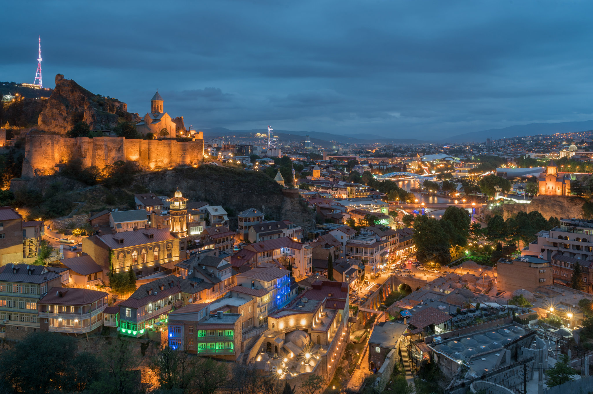
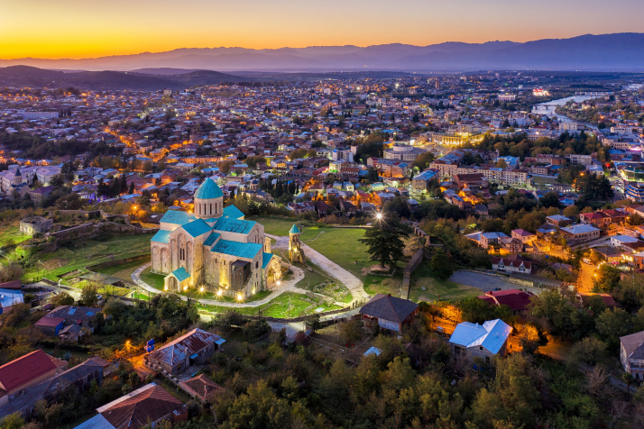
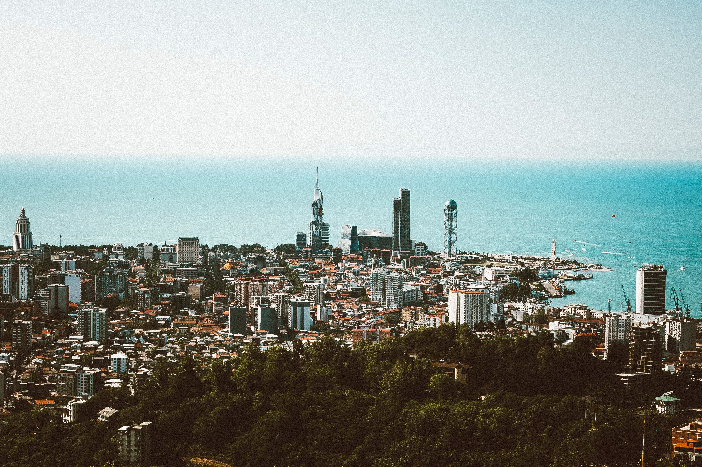

თბილისი, საქართველოს მრავალსაუკუნოვანი დედაქალაქი, თავისი ისტორიული ძველუბნით, გოგირდის აბანოებითა და ნარიყალას ციხესიმაგრით წარსულისა და თანამედროვეობის უნიკალურ სინთეზს წარმოადგენს. ქალაქის არქიტექტურაში ჰარმონიულად ერწყმის ერთმანეთს შუა საუკუნეების ვიწრო ქუჩები, მე-19 საუკუნის აივნებიანი სახლები და ულტრათანამედროვე თავისუფლების არქიტექტურული ძეგლები. საუკუნეების განმავლობაში ის არაერთი იმპერიის გზაჯვარედინი და კულტურული ცენტრი იყო, დღეს კი ქვეყნის მთავარი ეკონომიკური, საგანმანათლებლო და ინოვაციური ჰაბია. აქტიური კულტურული ცხოვრება, მრავალფეროვანი მუზეუმები და თეატრები თბილისს ნებისმიერი სტუმრისთვის განსაკუთრებულ მიმართულებად აქცევს. მუდმივი განვითარების მიუხედავად, ქალაქმა შეინარჩუნა თავისი უნიკალური სტუმართმოყვარეობა და ძველი თბილისური სული, რომელიც ყოველ ნაბიჯზე იგრძნობა.
| თბილისი | ქუთაისი | ბათუმი |
|---|---|---|
| დედაქალაქი / კულტურული ცენტრი | ისტორიული / პარლამენტის ქალაქი | შავი ზღვის მარგალიტი / პორტი |
| ნარიყალა / ძველი თბილისი | ბაგრატის ტაძარი / გელათი | ბათუმის ბულვარი / ზღვისპირა პარკი |
საქართველოს ორი ძირითადი რეგიონის — იმერეთისა და აჭარის მთავარი საყრდენი ქალაქები, ქუთაისი და ბათუმი, ქვეყნის მრავალფეროვნების საუკეთესო მაგალითია. ქუთაისი, რომელიც ოდესღაც ერთიანი საქართველოს სამეფოს დედაქალაქი იყო, ამაყობს ისტორიული ბაგრატის ტაძრითა და გელათის სამონასტრო კომპლექსით, რაც ქართული ოქროს ხანის სიდიადეს ასახავს. მეორე მხრივ, შავი ზღვის სანაპიროზე მდებარე ბათუმი უძველესი ისტორიის მქონე კოლხურ დასახლებას წარმოადგენდა, დღეს კი ის რეგიონის ერთ-ერთ ყველაზე თვალწარმტაც, თანამედროვე ტურისტულ მარგალიტად იქცა. ამ ორ ქალაქში სრულად ჩანს ქართული ცივილიზაციის ევოლუცია: ერთ მხარეს არის ძველი კოლხეთის მითოლოგია და საუკუნეების ტრადიციები, ხოლო მეორე მხარეს — ზღვისპირა მეტროპოლიის ზრდა, ევროპული სტილის მოედნები და ინოვაციური არქიტექტურა. ერთად აღებული ეს სამი ქალაქი ქმნის საქართველოს სრულყოფილ ისტორიულ და კულტურულ პორტრეტს.